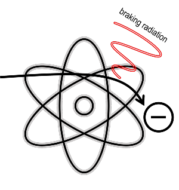
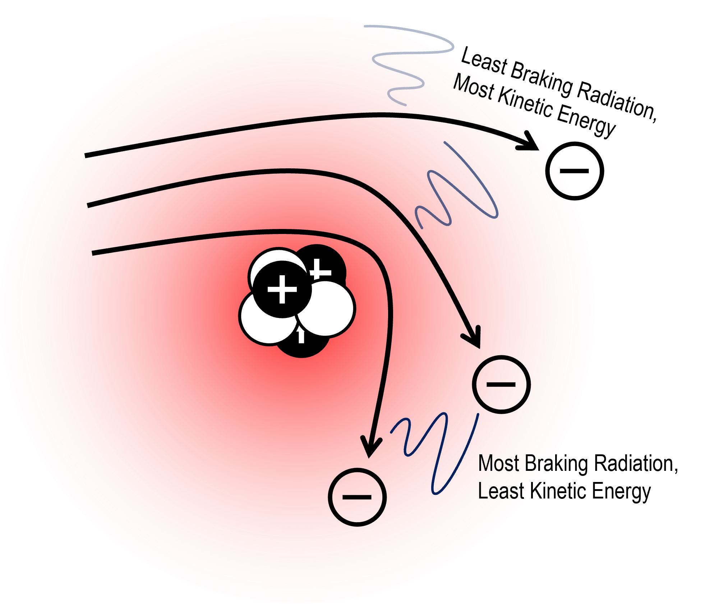
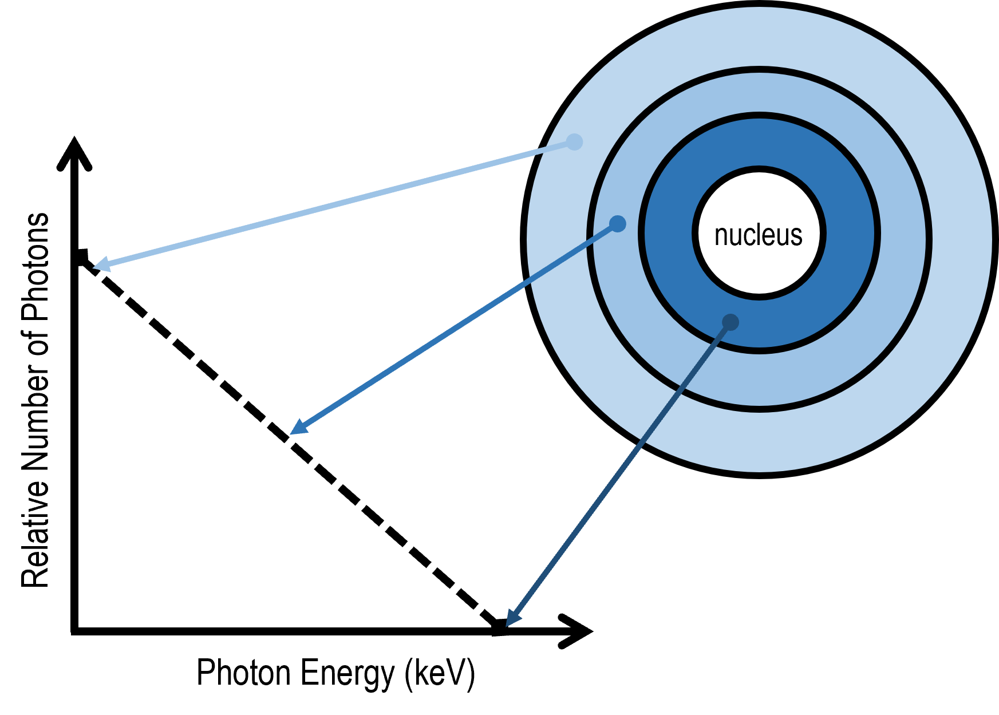
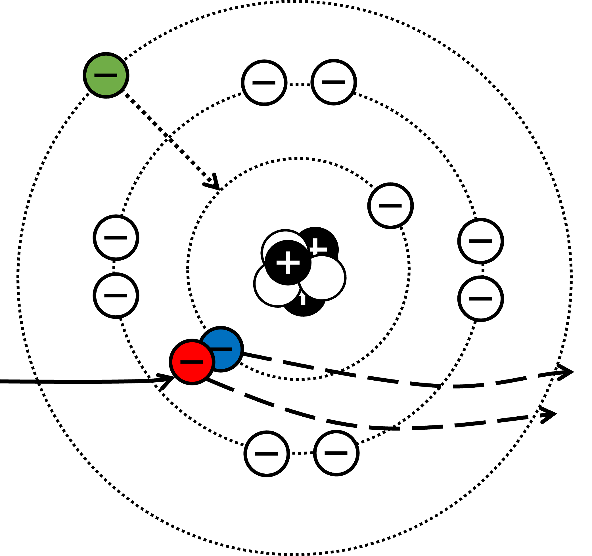

This lesson will focus on X-Ray formation at the atomic level, describing how X-Rays are produced through the 2 following processes: Bremsstrahlung and Chracteristic Radiation. We learn how to calculate the wavelength of produced X-Rays, and analyse the continous radiation wavelength spectrum produced by X-Rays.
Introduction
The production of X-Rays involves three steps:
Firstly, there must be a source of free electrons.
Secondly, those electrons are accelerated from rest, directed at a
large piece of metal, usually tungsten.
Thirdly, those electrons are decelerated as they pass through
the metal via interactions at the atomic level,
and in the process release the energy lost through deceleration
in the form of X-Ray radiation.
The process by which electrons are accelerated will be covered more in
depth in the following lesson on the X-Ray tube.
There are two interactions that occur during the deceleration of electrons that cause X-Rays to be produced. The first is the Bremsstrahlung process and the second is Characteristic radiation, and we cover them below.
Bremsstrahlung
Bremsstrahlung is a german word composing bremsen and strahlung, meaning "to decelerate/brake" and "radiation" respectively. As the name would suggest, bremsstrahlung is a process which involves electrons braking, or decelerating.
It is common knowledge that opposite atomic charges experience an attractive force, and negatively charged electrons orbiting the nucleus are attracted to positively charged protons that reside within the nucleus. When we accelerate electrons towards a metallic material, the electrons will pass between the atoms in the material, and when they pass close to a nucleus, they are deflected from their original path towards the nucleus and "braked" by the attractive force they experience from the protons in the nucleus. The energy lost by the deceleration is released in the form of X-Ray photons, but not all electrons will produce photons of equal energy.
Consider the following diagram. The closer an electron is the to nucleus, the stronger the attractive force it experiences from the protons in the nucleus (illustrated by intensity of the red), and as a result, the more deflection it will experience as it passes by the nucleus. The more deflection it experiences, the more kinetic energy of the electron is lost as it decelerates, and the released X-Ray photon will be of a higher energy level. This also implies that we can infer that the maximum possible photon energy is the same as the energy of the incident electron, as we cannot release more energy than the kinetic energy of the electron passing near the nucleus.
We note that the energy level of the released X-Ray photon is inversely proportional to the electron's distance from the nucleus, in other words, the farther away from the nucleus the electron is, the lower the energy of the photon released. If we mark the regions around the nucleus as bands of concentric circles, we find that the regions farthest from the nucleus are also the regions with the largest area, this means that there is a higher probability that an electron will pass through the outer spheres of the nucleus's influence (creating more photons), and a lower chance that an electron will pass very near the nucleus itself (creating less photons). With the two observations, we can conclude that as the photon energy decreases, the number of photons produced increases.
Combining our above knowledge, we notice that the Bremsstrahlung spectrum has a maximum photon energy equal to the maximum possible kinetic energy of the incident electrons. Up until that point, the number of photons produced increases as the photon energy decreases.
Recall from the previous lesson that the energy of a photon is: $$E=hf=\frac{hc}{\lambda}$$ We know that the maximum possible energy of a X-Ray photon is equal to the maximum kinetic energy of the accelerated electron, which can be found using the below equation: $$V\text{ - accelerating voltage}$$ $$e = 1.6x10^{-19}C\text{ - charge of an electron}$$ $$KE_{electron} = qV = eV$$ Combining the two equations, we can form the two equations that describe the relationship between accelerating voltage and maximum X-Ray photon frequency and minimum wavelength respectively: $$hf_{max} = eV$$ $$\frac{hc}{\lambda_{min}} = eV$$
Characteristic X-Rays
Characteristic X-Rays are named as such because their X-Rays are of sharp, discrete frequencies that are unique to different metals, and can be used to identify them.
The process of Characteristic X-Ray production involves the accelerated electrons (red) colliding with an electron in the inner valence shell (blue) of the atoms. If the electron possess kinetic energy greater than or equal to the binding energy of the orbiting electron, it is freed from the inner electron shell, leaving a vacancy. Outer electrons (green) drop shells in order to fill the vacancy, in the process giving up energy. This lost energy is emitted in the form of Characteristic X-Rays.

In X-Ray spectroscopy, on top of traditional atomic notation of KLMN shells,
we additionally use Siegbahn notation to denote the transitions of electrons
from upper to lower shells. The first character is an english letter
representing the final energy level of the transition (KLMN). The
second character is a subscript greek letter, alpha or beta, representing
a transition of 1 or 2 levels respectively.
For example, when an electron falls from the M-shell to the K-shell, the X-ray photon emitted is referred to as a K-beta X-Ray.
The below diagram summarises the different notations.
Because electrons at different electron shells can be dislodged, and
the vacancies created by the electron can be filled from different upper
electron levels, any given material can result in many different Characteristic X-Ray
energies. Because the X-Ray photon's energy is based on the energy lost
in each transition, alpha photons have the least energy and longest wavelength.
The likelihood of an K-alpha X-Ray being formed by L-shell electron filling the K-shell vacancy is higher than a K-beta X-Ray being formed by an M-shell electron filling the K-shell vacancy, and likewise also applies to L-alpha and L-beta X-Rays. This results in the intensity of each of the discrete energy levels being different, with the intensity of K-alpha X-Rays being greater than that of X-beta X-Rays. When we measure the discrete wavelengths where these peaks in intensity occur, we call them spectral lines.
X-Ray Spectrum
When we measure the different wavelength of the photons and plot their respective intensities, we refer to the graph as the X-Ray spectrum. Below is the spectrum of the X-rays emitted by an X-ray tube with a rhodium target, operated at 60 kV.
From our knowledge of the previous chapters, we notice that
the peaks in the spectrum (spectral lines) are the result of Characteristic X-Ray
photons, with K-alpha intensity being much higher than K-beta intensity.
The continous distribution of radiation is due to Bremsstrahlung,
with the distinctive curve at the start before it plateaus due to
the relationship we established earlier, that the number of photons produced
(and hence intensity) increases as the photon energy
(which has an inverse relationship with wavelength) decreases.
The plateau itself is due to low-energy photons (lower energy = higher wavelength)
being filtered out by the anode surface, x-ray tube window, or added
filter material (usually aluminium). In practice, low-energy photons
do not contribute to the formation of X-Ray images, and only serve to
irradiate the subject (usually human), which is undesirable.